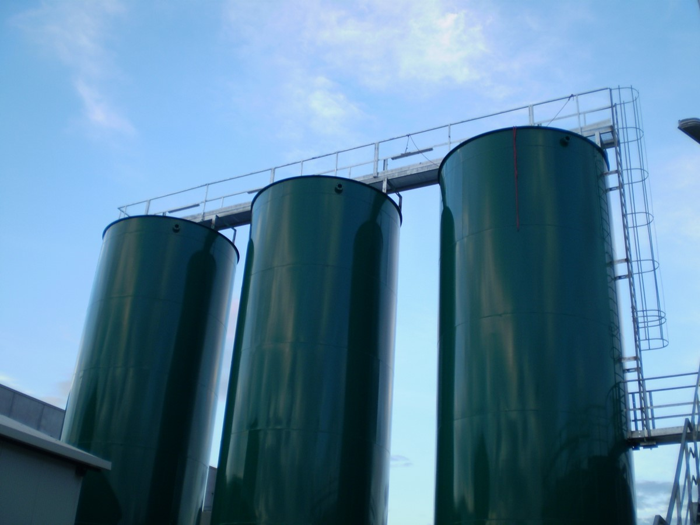

Tecnologia inteligente para o monitoramento de silos
A SmartSilo oferece soluções tecnológicas para o agronegócio, utilizando sensores ultrassônicos para monitorar o nível de armazenamento dos silos em tempo real com praticidade, segurança e eficiência.
Quem Somos
A SmartSilo nasceu a partir da iniciativa de estudantes da São Paulo Tech School com o objetivo de desenvolver soluções tecnológicas voltadas ao agronegócio.
Identificamos a necessidade de maior controle no armazenamento de grãos e criamos um sistema capaz de automatizar processos, reduzir desperdícios e auxiliar produtores na tomada de decisões.

Nossa Missão
Automatizar o monitoramento de silos por meio de sensores inteligentes, oferecendo mais precisão e segurança no controle do armazenamento agrícola.
Nosso objetivo é ajudar produtores e empresas a reduzirem custos, evitarem perdas e modernizarem a gestão de seus silos com dados em tempo real.
Nossa Solução
A SmartSilo utiliza sensores ultrassônicos de alta precisão para melhor monitoramento contínuo do nível de armazenamento dos silos, coletando dados em tempo real de forma automática e segura.
Todas as informações são enviadas para uma dashboard intuitiva, permitindo que o cliente acompanhe o desempenho dos silos, identifique possíveis riscos, reduza desperdícios e tome decisões com mais rapidez, eficiência e confiabilidade.